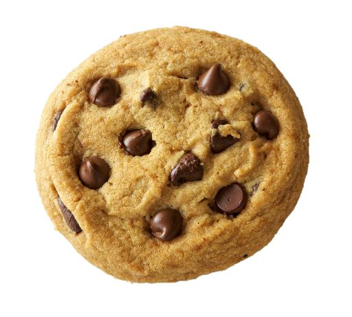
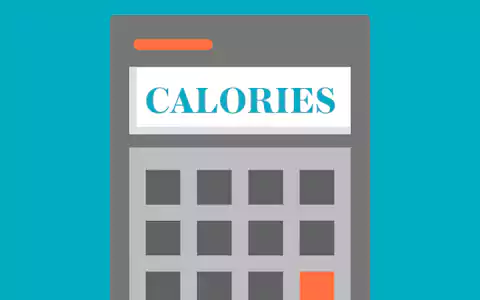
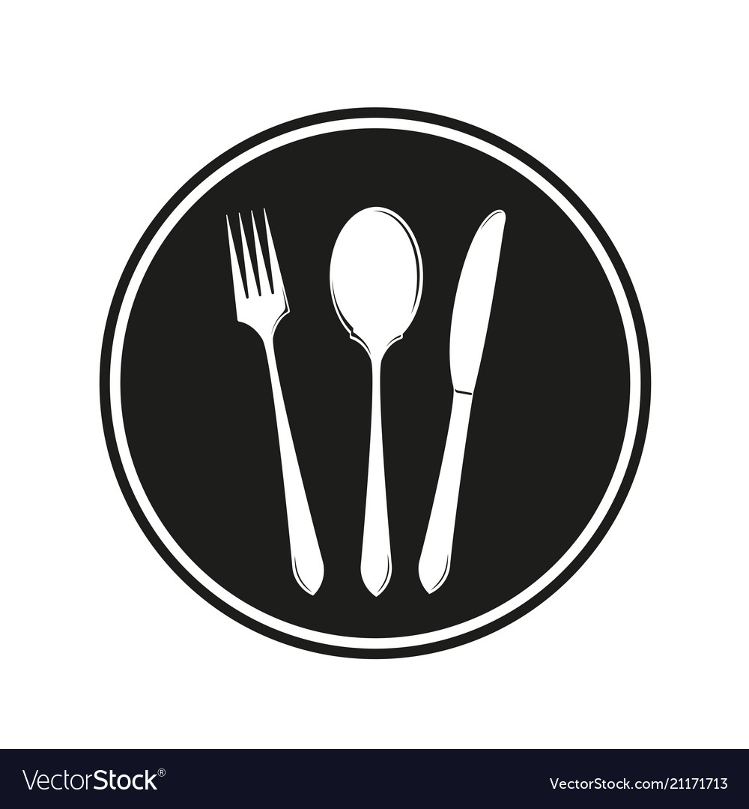
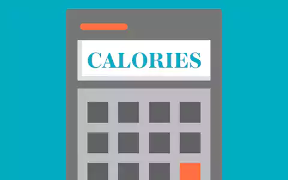
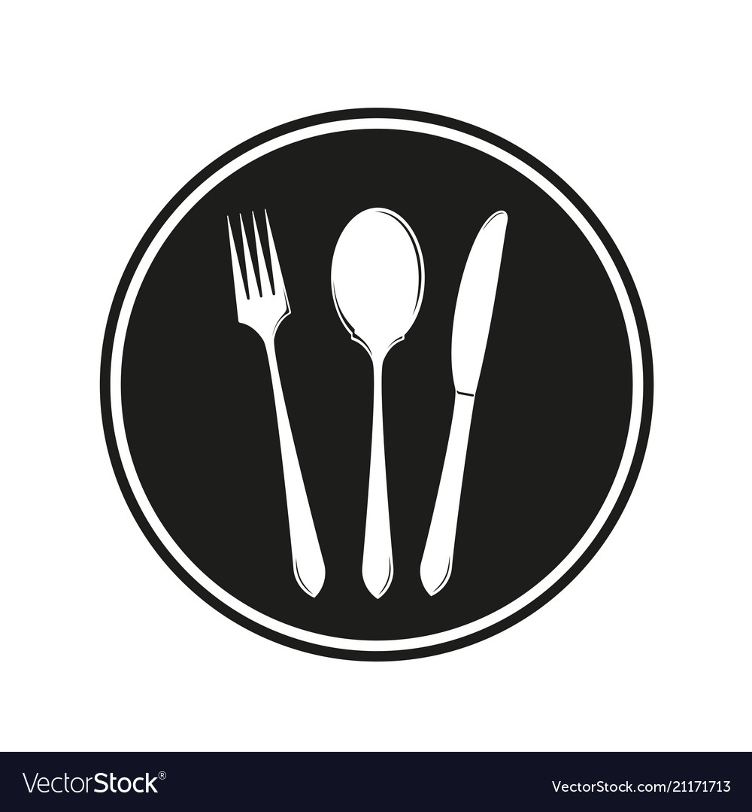

| 502 calories | Servings: 12 |
| Time it Takes: 2 hours |  Difficulty: Medium Difficulty: Medium |
| 502 calories | Servings: 12 |
| Time it Takes: 2 hours | Difficulty: Medium |
INGREDIENTS:200g butter, at room temperature155g (3/4 cup, firmly packed) brown sugar 2 eggs 300g (2cups) plain flour |
METHOD:1) Preheat oven to 180C. Grease 2 baking trays with melted butter. 2)Use an electric beater to beat the butter and sugar in a large bowl until creamy. Add the eggs, 1 at a time, beating well between each addition until combined. Stir in the flour until combined. Use your hands to bring the dough together in the bowl. 3)Roll 2-teaspoons portions of the mixture into balls. Place, about 5cm apart, on the prepared trays. Use a fork to flatten slightly. |

How to make chocolate chip cookies:-Using the classic cookie recipe, simply add your desired amount of choc chips into the mix when you add the flour. |
What other ingredients can I add into cookies?-To add flavour (and excitement) to the classic cookie recipe, some of the most popular additions include: choc chips, small chocolate chunks (white, milk or dark), chopped peanuts, M&Ms, raisins or caramel drops. |
How to make a cookie crispy?-The trick to baking crispy cookies is to reduce the amount of ingredients that hold moisture in the recipe:For example: reducing the flour, egg, or brown sugar ratio will make the dough drier, and therefore make a crisper cookie. -For extra crispy cookies, bake them at a lower temperature for longer. |
How to make a chewy cookie:-If you'd like your cookie to be chewy, you can start by making the cookie thicker. -Big dollops of dough make softer and chewier cookies than tiny and thin spoonfuls of dough. -Bake these thick cookies for a shorter time at a high temperature to firm them quickly and minimize spreading. |